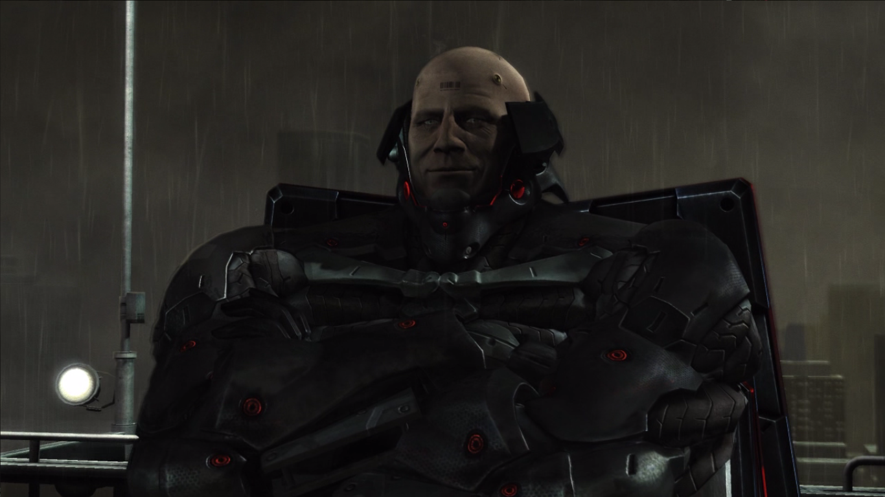

METAL GEAR RISING: REVENGEANCE é um spin-off da franquia Metal Gear Solid no estilo "Hack and slash" com trechos que misturam o "Stealth" de ujm jeito semelhante aos jogos anteriores. Foi desenvolvido pela PlatinumGames dirigido por Kenji Saito com a supervisão de Hideo Kojima (Desenvolvedor dos primeiros jogos da franquia Metal Gear e considerado um brilhante roteirista por muitos) e distríbuido pela Konami em 19 de fevereiro de 2013, inicialmente lançado para Playstation 3 e Xbox 360 e posteriormente lançado para Windows (via Steam) em janeiro de 2014.
Introdução
METAL GEAR RISING: REVENGEANCE conta com uma gameplay veloz, muita ação, um enredo cheio de reviravoltas e momentos marcantes que prendem sua atenção do início ao fim.
A história se passa no ano de 2018 em um mundo distópico e futurista onde as EMPs[1] possuem maior parte do poder militar global. As empresas militares são, em sua maioria, compostas por soldados ciborgues de variados tipos: ciborgues humanos, animais, voadores, gigantes, etc.
O jogo é protagonizado por Jack, um talentoso ciborgue espadachim que utiliza uma katana de alta frequência, uma arma letal que corta quase tudo que toca. Jack trabalha na empresa Maverick Security Consulting, Inc., uma agência de contratação de seguranças particulares. Ele possui vários codinomes, como "Sr. Relâmpago", "Jack, o Estripador" e, seu principal apelido, "Raiden".
Raiden nasceu em meio a um dia chuvoso na Libéria no ano de 1983 e cresceu durante um período turbulento no país: a primeira guerra civil da Libéria. Foi adotado pelo mesmo homem que assassinou seus pais durante a guerra, chamado de Solidus Snake. O criou como uma criança-soldado, fazendo-o servir em inúmeras guerras e sendo forçado a matar várias pessoas no processo, no qual deu origem ao seu apelido de "Jack, o Estripador".
Imagem de Raiden quando era pequeno:
História
O primeiro capítulo começa com Raiden durante seu trabalho como segurança pessoal ao primeiro-ministro africano N'mani, considerado por ele um homem simpático e um grande líder de seu país. De repente, são surpreendidos por uma emboscada de um grupo terrorista chamado de Desperado Enforcement LLC., que acabam sequestrando o primeiro-ministro e fugindo com ele.
Raiden persegue os terroristas para resgatar N'mani, mas de nada adianta, pois o matam logo em seguida. Tomado pela raiva, ele confronta um dos assassinos, mas acaba tendo seu olho cortado e seu braço esquerdo arrancado fora.
Após isso, Raiden é recolhido pela Maverick, onde é reparado e aprimorado com tecnologia de ponta por um renomado cientista alemão, permitindo que ele desfrute de mais flexibilidade em batalhas futuras. Agora Jack, com seu novo corpo, está pronto para ter sua vingança e acabar com os membros da Desperado.
Novo corpo de Raiden:
Ao longo de sua jornada, Raiden é acompanhado por Wolf, um lobo ciborgue que o auxilia durante sua missão, aconselhando-o sobre o que fazer e para onde ir. Wolf atua muito bem como parceiro de equipe e como personagem, tendo alguns diálogos engraçados com Raiden por interpretar de um jeito sério algumas coisas que ele diz.
Habilidades Básicas
Corrida Ninja
Faz com que Raiden se movimente mais rápido, além de atravessar obstáculos e reflitir tiros automaticamente. Também é possível atacar durante a corrida, são golpes mais rápidos, porém mais fracos.
Modo Katana Livre
Permite cortar objetos com mais precisão em qualquer ângulo que desejar, mas isso o deixará mais vulnerável, não podendo bloquear ataques. Se o Modo Katana for usado com a barra de energia cheia, Raiden entrará em um modo de "Bullet Time"[2].
| Modo Katana sem energia: |
Modo Katana com energia: |
|
|
Zandatsu
Raiden analisa o ponto fraco do corpo dos ciborgues, podendo absorver suas células de alimentação quando cortados, restaurando sua vida e energia ao máximo. Só é possível executar essa habilidade no Modo Katana com o estado de Bullet Time[2].
Obs: ciborgues com armaduras mais resistentes não possuem pontos fracos expostos.
Bloqueio
Defende a maioria dos golpes adversários. Se for feito no momento certo, é possível executar um contra-ataque letal, sendo capaz de fazer um Zandatsu em sequência.
| Bloqueio normal: |
Bloqueio c/ contra-ataque: |
|
|
Execução Ninja
Se o seu inimigo ainda não te localizou, é possível realizar um discreto, porém fatal golpe tanto pelas costas quanto por cima dele, matando-o instantaneamente. Após o golpe, é possível utilizar o Modo Katana junto à habilidade Zandatsu.
| Execução feita pelas costas: |
Execução feita por cima: |
|
|
Modo Estripador
Jack libera o seu "Estripador" interior, fazendo com que todos os seus ataques de espada se tornem extremamente letais, podendo cortar e desmembrar seus inimigos em qualquer ataque e quebrar armaduras facilmente. Entretanto, só pode ser ativada com a barra de energia no máximo, além de drená-la rapidamente.
Colecionáveis e Customizáveis
Durante o jogo, há varios itens escondidos pelo mapa que desbloqueiam algumas coisas extras, como dispositivos que liberam missões secundárias em realidade virtual e pequenos conjuntos de dados armazenados que liberam artbooks especiais, ou aqueles que te dão alguma vantagem no jogo em si como caixas de vida extra.
| Desbloqueando missões em RV: |
Exemplo de artbook desbloqueável: |
Caixas de vida extra: |
|
|
|
Há também os Pontos de Batalha que servem como moeda de troca para comprar novas espadas, trajes, habilidades, entre outras coisas. Os Pontos de Batalhas são adquiridos mais facilmente quando derrotar qualquer inimigo, mas também podem ser coletados em baús encontrados ao longo do jogo.
Sobre Desperado
Desperado é uma EMP[1] fabricante de materiais e provedora de recursos para terroristas e criminosos, que foi fundada no ano de 2016. Possui parcerias com outras EMPs[1] maiores, como a World Marshal - a maior até então. Um de seus principais objetivos é destruir locais que estão sob reconstrução para precisarem contratar serviços de EMPs[1]. A organização também possuia conexões com o tráfico de drogas e tráfico humano. Muitos de seus membros foram forçados a se juntarem pois eram incapazes de providenciar uma subsistência básica devido aos custos ciberneticos. Um fato iteressante
Aqui estão todos os principais aliados de Desperado, que tentam combater Raiden ao decorrer do jogo:
Metal Gear Ray
Ironicamente, a maior ameaça presente em Metal Gear Solid 2 aparece aqui como parte do tutorial. Foi convocado por Desperado durante o sequerstro de N'mani para poderem fugir com o primeiro-ministro e matar Raiden. Metal Gear Ray é um robô gigantesco equipado com sentinelas atiradoras, uma armadura resistente e um devastador raio de plasma.
A primeira fase da luta consiste em danificar seu revestimento para depois atacá-lo em cheio. Deve-se começar a atacar, primeiro, suas pernas ou cabeça e depois cortar sua armadura e/ou suas sentinelas fora. Quando ele estiver prestes a morrer, ele realizará um ataque com uma lâmina gigante para acertar Raiden. Nessa hora, você precisará defender o ataque, que iniciará um "Quick Time Event"[3] para refletir a lâmina e logo em seguida cortar o braço dele fora.
A segunda fase é um pouco mais simples. Aqui você fica em cima de um telhado de um dos prédios em volta e começa a atacar a cabeça dele, enquanto ele atira mísseis contra Raiden. Quando ele estiver perto de morrer, ele irá se afastar e disparar diversos mísseis em sua direção, te obrigando a usar a Corrida Ninja para passar através deles e finalizá-lo de uma vez.
Protótipo LQ-84i

Um ciborgue com formato de lobo equipado com garras afiadas e uma motoserra. É mais um dos ciborgues comandados por Desperado, novamente na tentativa de matar Raiden.
Durante a luta, ele irá se movimentar freneticamente em volta de você, apenas parando para te atacar. Tudo que se deve fazer é refletir suas investidas e atacá-lo normalmente. A cada um terço de vida perdida, ele irá se retirar momentaneamente e chamar aliados para te atacar no lugar dele, que podem ser usados para restaurar sua vida através do Zandatsu.
Mistral
Mistral é uma assassina fria e imponente com um corpo meio-ciborgue. Nasceu na Argélia e perdeu seus pais bem cedo durante uma guerra civil em torno de 1990. A partir daí foi criada a França e eventualmente acabou encontrando com os assassinos que mataram seus pais e fez eles provarem o gosto do próprio remédio. Um instinto assassino dispertou dentro dela desde então, matando todos em seu caminho para satisfazer seus desejos violentos. Até que, em certo ponto, a vida para ela ficou fácil demais até pra ela mesma, se sentindo desmotivada e sem propósito, chegando a sentir inveja de suas vítimas por pelo menos morrerem lutando por algo. Desperado logo soube de Mistral e a convidaram para se juntar ao grupo, aceitando a proposta. Mistral depois de muito tempo finalmente se sentiu em paz novamente, pois ela era livre para ser quem ela era de verdade ao longo de sua estadia da organização.
Na primeira fase da luta, Mistral utiliza braços extras acoplados às suas costas e uma espécie de lança maleável chamada de "L'Étranger" que também pode ser usado como um chicote. É possível quebrar sua lança e sues braços se a atacar bastante ou se fizer um Bloqueio com contra-ataque.
Junto à Mistral, há uns robozinhos chamados de "Dwarf Gekko" que, além de te atacarem, usa os próprios braços para repor tanto os braços extras como criar outra lança para Mistral usar.
Dwarf Gekko:
A segunda fase se passa em cima de um tubo de metal, podendo apenas se mover para frente ou para trás. Agora os ataques de Mistral se tornam um pouco mais velozes, sendo mais difícil defender no tempo certo além de arremessar os Dwarf Gekkos contra você, como se fossem bolas de tênis.
Na terceira fase você está de volta em terra firme, com Mistral usando os padrões de ataque da primeira e segunda fase juntos. Em sua volta também haverá barris explosivos, que explodem quando cortados. O recomendado é evitar ao máximo contato com eles é focar em atacar somente ela até o fim da luta.
Monsoon
Monsoon é um misantropo sociopata com uma visão de mundo extremamente distorcida, tendo como filosofia de vida o niilismo. Nasceu por volta dos anos 70 em Camboja, onde, nessa época, acontecia o chamado "Genocídio de Camboja", uma época de ditadura no país de puro terror e tortura, no qual quem não apoiava ou ia contra os princípios que a ditadura impusesse, era morto. Monsoon teve que se virar com o que pôde, aprendeu a dominar o uso das espadas "Sai" e decidiu se unir com o crime organizado Cambojano. Acabou sendo baleado durante uma de suas missões, o que quase acarretou em sua morte. Ele usou o dinheiro que lhe restava para trocar para um corpo cibernético à base de eletromagnetismo, pois era o único jeito de se manter vivo tendo em mente o estado em que estava.
Antes mesmo da luta começar, Monsoon exclarece ao Raiden sua visão de mundo, tendo em vista o que ele teve que passar durante a infância. Ele diz que tudo o que realmente importa nesse mundo, além das guerras, são os "memes". Segundo ele, memes são as nossas crenças, nossas formas de pensar e agir, os hábitos que compõe uma alma viva. Esses memes o fez perceber como a humanidade era doente, por isso acredita tanto na importância deles. Em suas próprias palavras ele diz: "Exponha uma pessoa à raiva o suficiente e ela aprenderá a odiar. Livre arbítrio é um mito, religião é uma piada."
Raiden diz ao Monsoon que entende como ele pensa, pois desde cedo as pessoas o fizeram esquecer de sua real natureza, do que ele realmente era capaz. Após essas palavras, Raiden cede ao seus verdadeiros instintos, liberando o Estripador dentro de si.
Durante a luta, Monsoon irá te atacar incessantemente com suas espadas "Sai" e utilizará granadas de fósforo vermelho para te cegar e te atacar por todos os lados. Apenas defenda seus ataques até ele abrir uma brecha para ser atacado. Em alguns momentos ele usará seu poder eletromagnético para arremessar veículos contra você, o qual você precisa cortá-los com o Modo Katana.
Haverá momentos em que ele vai separar as partes do seu corpo com a força eletromagnética, te impedindo de acertá-lo com a espada. É recomendado você, ou esperar ele voltar ao normal, ou joguar uma granada de eletromagnetismo nele e cortar o núcleo de energia localizado no seu rosto, deixando-o novamente vulnerável aos seus ataques .
Perto do fim da luta, Monsoon lançará um obelisco de concreto seguido de um carro em você, ao qual você deve correr sobre o obelisco e cortar o veículo, após isso, basta apenas finalizá-lo.
Sundowner

É conhecido por ser uma máquina de destruição, matando seus adversários brutalmente, além de ser o líder de Desperado. Nascido no ano de 1972 no Alabama, ele veio de uma família pobre que valorizava os estudos acima de tudo, na esperança que ele poderia ter um futuro melhor. Sundowner era realmente bom alunos, tirava notas altíssimas na escola mas nunca conseguiu entrar pra uma faculdade por dificuldades financeiras. Decidiu se alisar ao exército e logo foi convocado devido sua postura grande e robusta, quando em 2008 abandonou a carreira no exército após participar de diversar guerras como a Invasão do Panamá, A Guerra do Golfo, A Guerra do Iraque e do Afeganistão.
Seguiu a vida como mercenário contratado, sendo conhecido por suas técnicas sangnolentas de combate, deixando sangue para todo lado, tanto sangue que parecia ser o céu de um fim de tarde na California (por isso seu nome, Sundowner). Durante uma de suas missões, ele foi severamente machucado por uma mina terrestre que quase o matou, o que acarretou na sua cirurgia para um novo corpo robotizado. Foi investigado pelo governo dos EUA por crimes de guerra como profanação de cadáveres, tortura e causador mortes antiéticas, contudo, não foi preso apenas por falta de provas.
Sundowner também foi um dos terroristas a matar o primeiro-ministro africano, pois o país ainda estava no processo de reconstrução após a queda da economia gerada pela guerra, e Sundowner, que conseguiu sobreviver justamente por causa da guerra, foi descontar no primeiro-ministro.
Na batalha contra Raiden, Sundowner utiliza dois facões chamados de "Bloodlust" que podem ser usados separadamente ou anexados, formando uma espécie de tesoura. Também é protegido por escudos que explodem quando tocados mas que podem ser quebrados no Modo Katana se cortados de um ângulo certo entre os escudos.
Quando todos os escudos são quebrados, Sundowner iniciará a fase dois de sua luta, no qual ele junta seus dois facões como forma de tesoura e fica bem mais veloz em movimento, além de conseguir segurar um pilar inteiro com as próprias mãos e usar para te atacar.
A luta em si não é comlpexa, basta apenas esperar ele chegar perto de você para começar a golpeá-lo aproveitando as brechas entre os ataques e desviar dos tiros dos helicópteros que ficam sobrevoando em volta da arena.
Após ele ser derrotado, ele voltará pendurado em um helicóptero que atira mísseis contra você. Raiden utiliza um ciborgue voador como "carona" para chegar até ele e explode o helicóptero.
Samuel Rodrigues
Samuel Rodrigues - também chamado de Jetstream Sam - é um espadachim extremamente habilidoso que foi treinado desde pequeno. É descendente de uma longa linhagem de espadachins japoneses desde o século XVI. Seu país de origem é o Brasil, onde seu pai administrava seu próprio dojô, chamado de "Rodrigues New Shadow School" ou "Escola das Novas Sombras Rodrigues", onde dava aulas sobre técnicas de combate com katanas seguindo um estilo chamado de Satsujin-ken ou "Espada Assassina", que consistia em eliminar seus inimigos do jeito mais brutal possível. A partir de um certo momento, Sam pôde pessoalmente herdar a espada de seu pai, chamada de Murasama. Essa lâmina tinha um poder destrutivo imenso, podendo cortar qualquer um com muita facilidade.
Samuel, então, foi de viajem a outro país para treinar mais sua técnica com a espada. Durante esse meio-tempo, seu pai acabou sendo morto por um de seus próprios alunos do dojô que tinha envolvimento com o cartel de drogas. Sam então voltou para o Brasil para vingar seu pai e, não só matou o aluno em questão, como todos os envolvidos do cartel. Vagou pelo mundo trabalhando como mercenário, derrubando grandes organizações mafiosas. Durante essa época, não haviam aprimaromentos ciborgues disponíveis no mercado, então Sam usava da sua mais pura habilidade. Com todo o dinheiro que ganhava, Sam foi melhorando sua espada com o tempo, aprimando-a com alta frequência, trava de ID e um gatilho na bainha para sacá-la mais rápido.
Espada Murasama:
Curiosidade: a espada na verdade se chamava Muramasa, mas foi mal traduzido pela família Rodrigues.
Enquanta vagava pelo mundo, Sam ouviu falar sobre os planos da World Marshal, empresa que colaborava com Desperado, e partiu rumo aos EUA para por um fim ao esquema, entretanto, não foi capaz de derrotá-los e ficou à beira da morte durante uma de suas lutas, sendo obrigado a se juntar à organização para não morrer. Substituíram seu braço direito por material cibernético, porque perdeu o movimento do braço como uma sequela de sua luta não-ganha.
Raiden e Samuel tem uma richa desde o começo do jogo, pois foi ele que arrancou seu braço enquanto estava na África. Seu primeiro confronto com Raiden ocorre em cima de um trem, onde travam uma luta acirrada que resulta em Samuel levando vantagem e Raiden saindo gravemente ferido, porém Sam desiste de matá-lo no fim da luta.
Sua segunda (e real) luta ocorre no meio da estrada com Samuel determinado a acertar as contas com Raiden de uma vez por todas, com a estética da batalha parecida com a de um duelo entre cowboys do velho-oeste, sozinhos, no meio do nada, em um combate frente a frente. Ele começa atacando você com uma série de golpes de espada e desvia rapidamente dos seus ataques. Seus golpes de espada são rápidos, então bloqueá-los se torna uma tarefa complicada.
Em um determinado momento, Samuel acaba se descuidando e abrindo sua guarda, dando espaço para Raiden tirar a espada de sua mão e fazendo-o lutar com seus próprios braços. Nesse estado ele ficará ainda mais agitado, procedendo com investidas violentas para te pregar contra o chão.
Em seu último estágio, Jetstream novamente recupera sua espada retornando ao estilo de combate padrão com alguns ataques extras, como avançar de uma ponta a outra do mapa enquanto ataca Raiden no processo ou como arremessar várias pedras em sua direção, sendo necessário utilizar o Modo Katana para evitá-las. Samuel, então, realiza sua última investida contra Jack, que acaba por achar outra brecha em sua defesa, perfurando Samuel Rodrigues com sua katana.
Metal Gear EXCELSUS
Metal Gear EXCELSUS, assim como Metal Gear Ray, é um enorme robô equipado com grandes lâminas e raios de plasma. Ele tem um certo diferncial: refletir seus ataques de lâmina te cuasará dano de qualquer jeito, mas não o matará mesmo se sua vida estiver extremamente baixa.
Enquanto ele estiver te atacando, é necessário que bata nos seus braços para lhe causar dano. Eventualmente ele irá usar a perna para te confrontar e é aí onde você deve focar em bater. Em determinado momento, você deverá usar o Modo Katana para primeiro cortar a proteção do "joelho" e depois cortar a perna inteira.
Após duas pernas cortadas fora, Raiden usa força bruta para arrancar um dos braços equipados com a lâmina, usando-o para cortar o próprio robô e, assim, destruí-lo.
Steven Armstrong
Antes mesmo da luta contra o Metal Gear EXCELSUS, somos apresentados ao Steven Armstrong, o CEO - e o soldado mais forte - da World Marshal e senador do Estado de Colorado nos Estados Unidos. Armstrong é um homem extremamente nacionalista e patriotista que segue ideiais absurdos como promover a guerra e a violência para alavancar a economia do país. Também é adepto do Darwinismo Social, que apoia a formação de uma nação onde apenas os mais fortes serão capazes de sobreviver.
Pouco se sabe sobre seu passado, apenas que nasceu e cresceu no Estado do Texas nos Estados Unidos e jogava futebol americano como zagueiro na Universidade do Texas antes de prosseguir com a carreira política, porém decidiu se alistar à Marinha dos Estados Unidos pelo desejo de querer servir seu país, contudo nunca presenciou nenhum combate durante seu tempo lá. Em 2016 ele manteve o seu grande físico e o aprimorou revestindo-o de nanomáquinas, que faz com que ele endureça a pele quando exposto à dor, deixando ele extremamente resistente.
Após a luta contra o Metal Gear EXCELSUS, Armstrong enfrenta Raiden no mano a mano em cima da carcaça do robozão, usando apenas ataques corpo a corpo como socos pesados e investidas que não são defendíveis. Em determinado ponto, Armstrong quebra a espada de Raiden ao meio com as próprias mãos, o obrigando a descartar sua katana e começar a usar os punhos para atacá-lo.
Pelo corpo de Armstrong ser muito resistente, os socos de Raiden não davam conta de ferir ele por mais que ficasse tentando. Até que o senador fixa Jack contra o chão é começa a socá-lo repetidas vezes sem parar. Nisso, a carcaça de Metal Gear EXCELSUS explode com tudo em volta pegando fogo. Quando Raiden estava prestes a morrer, Wolf aparece para o ajudar, entregando a espada de Samuel Rodrigues: A Murasama, que tinha poder suficiente para ferir o senador.
Nessa última fase da luta, Armstrong irá tentar te atacar de todos os jeitos possíveis, com socos, chutes, quebrar partes do chão e até mesmo arremessar os restos do Metal Gear. Há um padrão de ataque diferente para cada um dos golpes, então entende-los é uma tarefa complicada. Para as carcaças que ele arremessa em você, é preciso cortá-los alinhar seu corte dentro do Modo Katana.
Conteúdos adicionais
Um pouco depois do lançamento de METAL GEAR RISING: REVENGEANCE, alguns conteúdos extras foram adicionados no jogo como forma de DLC. Para a versão de PC, todas elas estão incluidas junto ao jogo normal, mas para consoles.
Ao todo foram adicionadas 4 DLCs, sendo elas:
Skins extras
Concede novos trajes ao Raiden que, dependendo do traje, permite ter certas vantagens, como aumentar o número máximo do estoque de um certo item que ele pode carregar.
Exemplos:
| Armadura Inferno: |
Armadura Comando: |
Armadura Branca: |
|
|
|
| Aumenta o limite do estoque de objetos arremessáveis como granadas e bombas de fumaça. |
Aumenta o limite do estoque de armas secundárias como lança-mísseis. |
Aumenta o limite do estoque de itens medicinais como repositores de vida e energia. |
Missões em RV extras
Disponibiliza 30 novas missões em RV, tendo objetivos bem mais complicados que requerem mais habilidade do que as missões padrões. Em algumas dessas missões é permitido controlar um Dwarf Gekko como personagem principal. Ele é um pouco mais lento em comparação ao Raiden porém tem pulos mais altos e consegue desestabilizar outros ciborgues através de um choque.
Jetstream
Adiciona um novo capítulo ao jogo com Samuel Rodrigues sendo um personagem jogável. A história explica mais detalhadamente como ele se juntou à World Marshal/Desperado, com Samuel enfrentando vários ciborgues inimigos, como Metal Gear RAY e o Protótipo LQ-84i. Ele possui uma jogabilidade diferente que a de Raiden no jogo padrão, podendo dar pulo duplos, carragar ataques com sua espada Murasama e provocar inimigos, que os fazem causar mais dano momentaeamente porém os deixam mais vulnerável aos seus ataques. Não consegue executar a habilidade de Execução Ninja ou a Corrida Ninja, mas em compensação corre muito mais rápido.
| Corrida: |
Pulo Duplo: |
|
|
| Ataque carregado: |
Provocação: |
|
|
Blade Wolf
Adiciona um novo capítulo ao jogo, onde você controla o Protótipo LQ-84i como personagem principal. A história conta sobre o passado de Wolf, apelidado de Blade Wolf, que antes era um ciborgue controlado e comandado por Mistral para colaborar com Desperado. O enredo acompanha sua revolta contra a empresa em busca de ser livre e viver sua própria vida, enquanto enfrenta tropas de Desperado que tentam o impedir.
Ao final da DLC, somos introduzidos a outro membro de Desprado:
Khamsin
Khamsin se demosntra rival de Blade Wolf no final de sua DLC, barrando-o de alcançar sua tão sonhada liberdade. Ele tem um corpo ciborgue que não possui pernas, apenas consegue se locomover porque sua parte debaixo do corpo é acomplado com um robô mecha equipado com uma espécie de "machado motoserra". Ele tenta de tudo para impedir o canino, mas acaba tendo os dois braços do robô cortados e morre fatiado pelo cachorro.